KATE stage LASH — 蒲田駅徒歩2分
骨格診断×黄金比で導き出す、あなただけの眉毛デザイン。
国産の高品質薬剤で叶える、傷まないまつ毛パーマ。
眉毛とまつ毛、両方を整えて「理想の目元」へ。
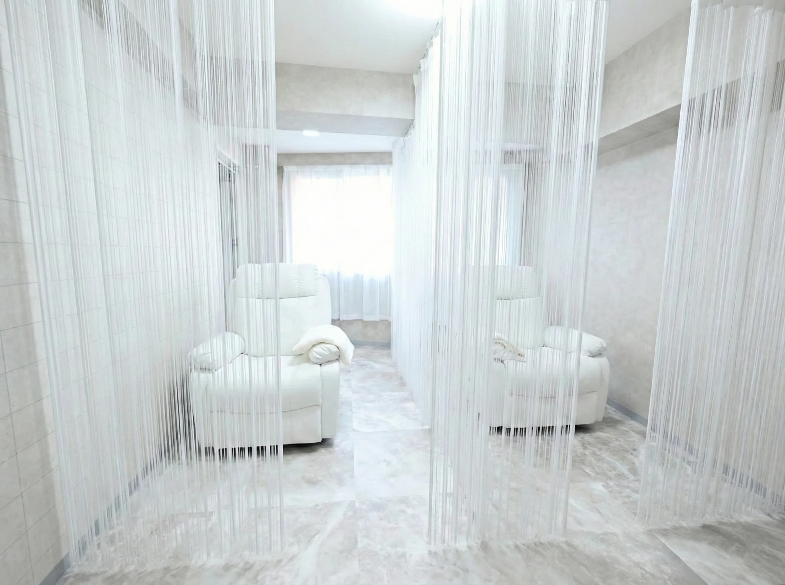
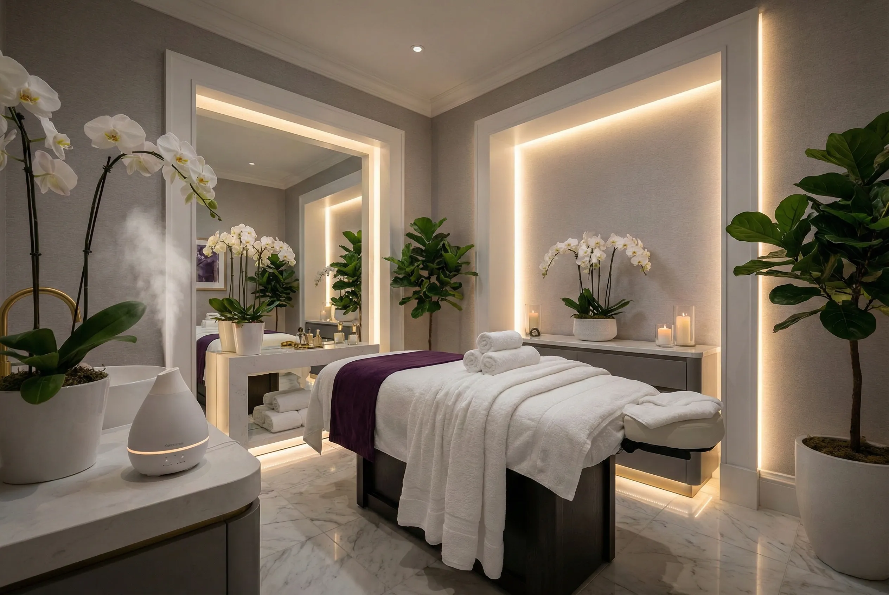
「眉毛の形がイメージと違った」
「まつ毛パーマがすぐ取れた」
「通うほどまつ毛が傷んでいく気がする」
——そんな経験、ありませんか？
眉毛・まつ毛の仕上がりと持ちを決めるのは、「カウンセリング」「技術力」「薬剤の品質」の3つ。どれかひとつでも欠ければ、理想の目元には届きません。
KATE stage LASHは眉毛とまつ毛の専門サロンとして、この3つに一切の妥協を許しません。だから実現できる、約37日持続するパーマと通うほど育つ自まつ毛。
すべて国産の高品質薬剤を使用。
380時間以上の研修を修了した技術者のみがデビュー。
骨格×黄金比に基づく完全オーダーメイド設計。
眉毛とまつ毛を同時に整えれば、朝のメイク時間は半分に。目元の印象が変わると、毎日がもっと楽しくなります。
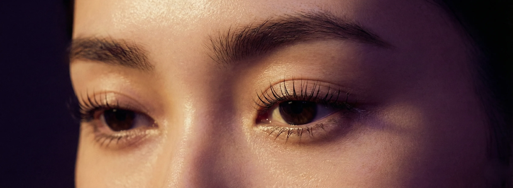
目元が変われば、
世界が変わる。
「価格の安さ」ではなく「価値の高さ」で選ぶ。
それが、長期的に美しいまつ毛を手に入れる秘訣です。
| 一般的なサロン | KATE stage LASH | |
|---|---|---|
| 薬剤の品質 | 海外製の安価なもの 原価を抑えて効率重視 |
すべて国産の高品質薬剤 肌に優しく仕上がりも長持ち |
| カウンセリング | 5〜10分で済ませがち 希望を聞くだけ |
あなたの骨格を分析し、黄金比で"似合う"を設計 なりたい姿を一緒に設計 |
| 眉毛デザイン | なんとなく整える 流行に合わせるだけ |
黄金比×骨格診断で設計 誰が見ても"似合う"と感じるバランスへ |
| 技術者の研修 | 数十時間程度 早期デビュー重視 |
380時間以上の徹底研修 技術と接客の両方を習得 |
| パーマの持ち | 約16日で劣化が目立つ すぐに落ちることも |
約37日間、自信の持てる仕上がりをキープ 高品質薬剤だから実現 |
| まつ毛へのダメージ | 繰り返すと傷む 抜けやすく・細くなる |
通うほど育つ「まつ育」 太く・長く・抜けにくく |
なぜ薬剤にこだわるのか？
安価な薬剤は刺激が強く、繰り返すほどまつ毛が傷みます。
当店は業界通常の5倍の原価をかけた薬剤のみを使用。
まつ毛への負担を最小限に抑えながら、
しっかりとしたカールを実現します。
だから「約37日間」という長持ちと、
「通うほど美しくなる」が両立できるのです。
「なんとなく」ではなく「確実に」似合うデザインへ
目の形・骨格・まぶたの厚み・まつ毛の生え方——
すべてを分析した上で、あなただけのデザインを設計。
さらに、ライフスタイルやなりたい印象も深くヒアリング。
「似合う」と「なりたい」の両方を叶えるのが、
当店のカウンセリングです。
技術力の差は「研修時間」で決まる
一般的なサロンでは数十時間の研修でデビューすることも。
当店は最低380時間以上の研修を修了した技術者のみがデビュー。
技術だけでなく、カウンセリング力・接客力・
まつ毛に関する専門知識まで、すべてを習得してから
お客様に施術を行います。
「誰が施術するか」で仕上がりは変わる
当店の採用基準は技術だけではありません。
お客様への想い、向上心、丁寧さ、人柄——
100人応募しても、採用されるのはわずか4人。
この厳しい基準をクリアしたスタッフだからこそ、
心からのおもてなしと確かな技術をお届けできます。
単発施術ではなく「まつ毛を育てる」発想
まつ毛には約40日の成長周期があります。
この周期に合わせた施術と、当店オリジナルのセラムを
組み合わせることで、回を重ねるごとに
自まつ毛が太く・長く・抜けにくく育っていきます。
3回目の施術で「全然違う」と実感される方がほとんどです。
「傷めながら通う」のではなく「育てながら通う」。
KATE stage LASHだけの「まつ育」メソッドをご紹介します。
安価な薬剤で施術を繰り返すため、
通うほどまつ毛が傷み、
カールが取れやすくなり、
最終的にまつ毛が細く・短く・スカスカに…
高品質薬剤＋美容液塗布により、
施術しながらまつ毛を育成。
通うほどまつ毛にハリ・コシが出て、
カールの仕上がりも持ちもアップ
施術オプション +¥3,300（税込）
当店が自信を持っておすすめする、 オリジナル開発のまつ毛美容液。 市販品とは成分濃度が違います。 施術中に塗布するので、 ご自宅でのケアに手間は増えません。
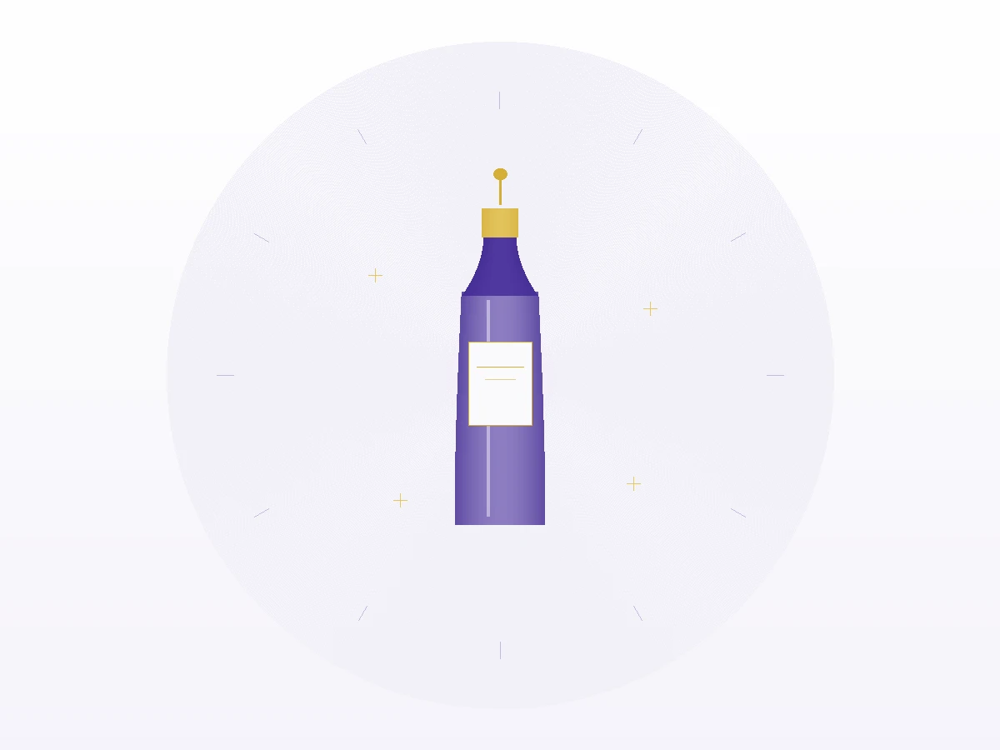
まつ毛の成長周期は約40日。この周期に合わせた来店が、
最も効率的にまつ毛を育てる秘訣です。
3回目の施術で、明らかな変化を実感される方がほとんどです。
まつ毛の状態を徹底診断。骨格に合わせた理想のデザインを設計し、初回からセラムを塗布。ここから「まつ育」がスタートします。
セラムの効果でまつ毛に変化が現れ始めます。パーマの仕上がりも1回目より良くなり、「何か違う」と感じる方が多いです。
友人やメイクアップアーティストから言われるほどの変化。まつ毛が太く・長くなり、カールの立ち上がりが美しく。すっぴんでも自信が持てるように。
定期的なケアで、この状態を維持。年齢を重ねてもまつ毛の美しさをキープできます。「まつ毛は消耗品」という概念を覆す、新しいアプローチです。
セラムなしの施術は「キープ」。
セラムありの施術は「育成」。
+¥3,300の投資で、3回後の自まつ毛がまるで別人に。
施術中に塗布するので、ご自宅でのケアは不要。
初回から使うほど、変化を早く実感できます。
眉毛は「顔の額縁」と呼ばれ、目元の印象を大きく左右します。
当店は眉毛専門の技術と知識で、あなたの「似合う眉」を見つけます。
黄金比とは、古代ギリシャから伝わる「もっとも美しいバランス」を表す比率（1:1.618）。モナリザや凱旋門など、歴史的な美術品や建築にも用いられています。
当店では、この黄金比を眉毛デザインに応用。お客様の顔の比率を細かく計測し、数学的に「似合う」眉の位置・長さ・角度を導き出します。
「なんとなく整える」のではなく、根拠に基づいた美眉だからこそ、誰が見ても「似合う」と感じる仕上がりになるのです。
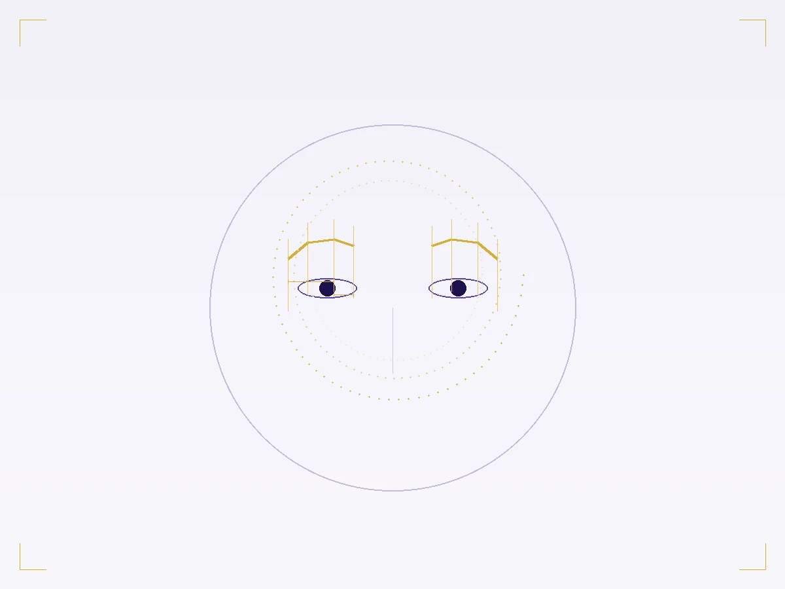
黄金比だけでは、まだ「理想の眉」には到達しません。お顔の骨格——額の広さ、頬骨の張り、顎のライン——によって、似合う眉の形は一人ひとり異なります。
眉山を少し高めに設定し、キリッとした印象をプラス。顔全体を引き締めます。
平行眉で横のラインを強調。顔の縦長感をカバーし、柔らかい印象に。
眉山を緩やかに設定し、曲線を意識。エラの張りを目立たなくします。
眉尻を少し下げ、太めの眉に。シャープな印象を和らげます。
当店では「黄金比×骨格診断×なりたい印象」の3つを掛け合わせることで、「似合う」と「なりたい」の両方を叶える眉毛デザインを実現しています。
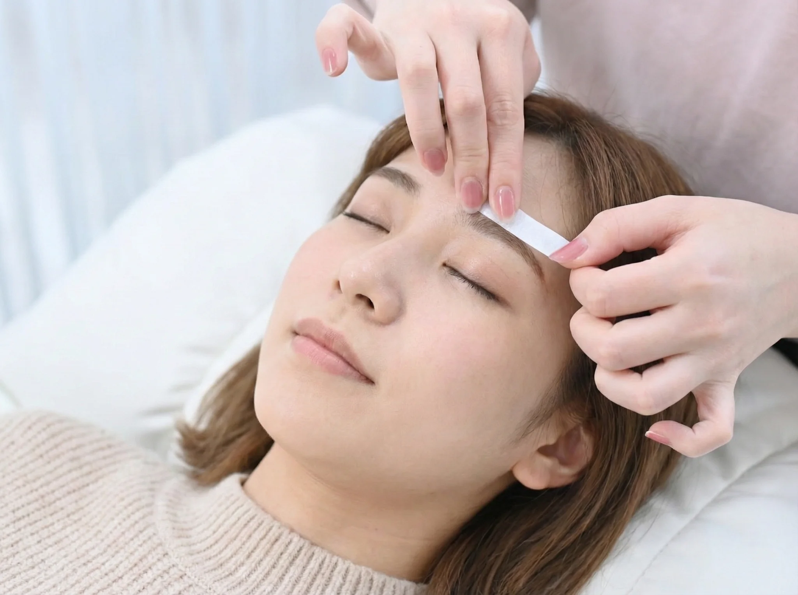
理想の眉ラインを作るには、不要な毛を取り除くことが欠かせません。自己処理では難しい産毛や、眉の輪郭からはみ出た毛をWAXで一気に除去します。
産毛を除去することで眉のラインが際立ち、垢抜けた印象に
余計な毛がないので、アイブロウメイクが格段にラクになる
WAXは毛根から抜くため、2〜3週間は美しい状態をキープ
さらに当店では「間引き」を行います。眉毛の密度が濃い部分を1本1本カットし、自然な毛流れと立体感を演出。これにより、ノーメイクでも美しい眉に仕上がります。
眉毛パーマ（HBL：ハリウッドブロウリフト）に使用する薬剤は、すべて日本国内で製造された高品質なもののみを採用。海外製の安価な薬剤とは安全性・仕上がり・持続力が違います。
日本人の肌質に合わせて開発された低刺激処方。敏感肌の方にも安心です。
毛流れを自在にコントロールし、ふんわり立体的な眉を実現します。
高品質だからこそ、美しい毛流れが約3〜4週間持続します。
眉毛とまつ毛は、どちらも「目元の印象」を決める重要なパーツ。
片方だけを整えても、もう片方がアンバランスだと効果は半減してしまいます。
眉毛とまつ毛を同時に調整することで、目元全体の印象が統一。より洗練された仕上がりになります。
別々に通う手間がなくなり、1回の来店で目元全体が完成。忙しい方にこそおすすめです。
同時施術はセット価格が適用され、単品で受けるよりもお得。コストパフォーマンスも抜群です。
眉メイクもマスカラも不要に。朝の準備時間が15〜20分短くなったというお声を多数いただいています。
当店人気No.1のセットメニュー
眉毛とまつ毛、両方を同時に整えて「理想の目元」を手に入れませんか？
初めてでも安心。丁寧にご案内いたします。
ご来店いただきましたら、受付にてカルテをご記入いただきます。
骨格・目元の状態を分析し、なりたい姿をヒアリング。最適なデザインをご提案します。
目元のメイクや油分を丁寧に除去。施術のもちを良くするための大切な工程です。
高品質薬剤を使用した丁寧な施術。お客様の状態に合わせて薬剤配合を調整します。
オリジナルのプレミアムまつ育セラムを塗布。施術と同時にまつ毛のケアを行います。
仕上がりをご確認いただき、ご自宅でのケア方法や次回来店の目安をお伝えします。
一人ひとりの骨格に合わせた、オーダーメイドデザインの数々
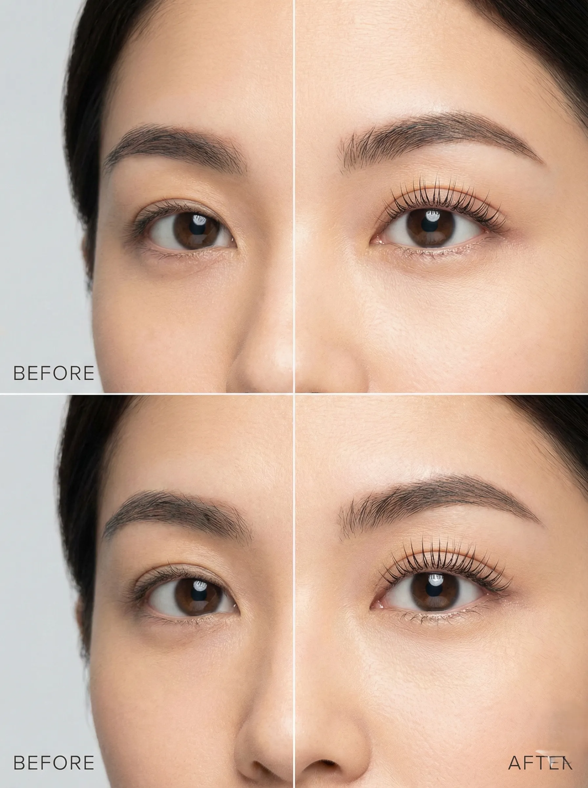
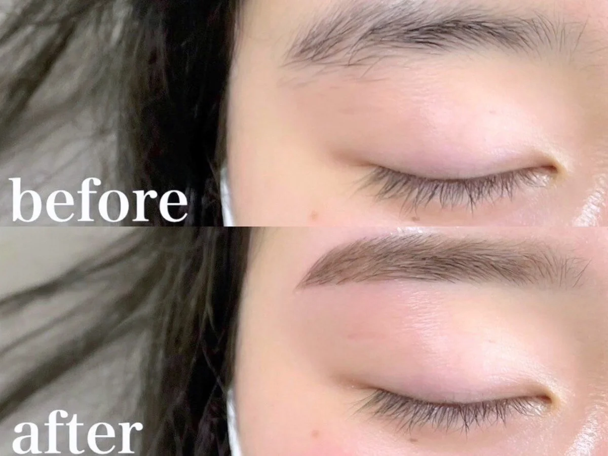
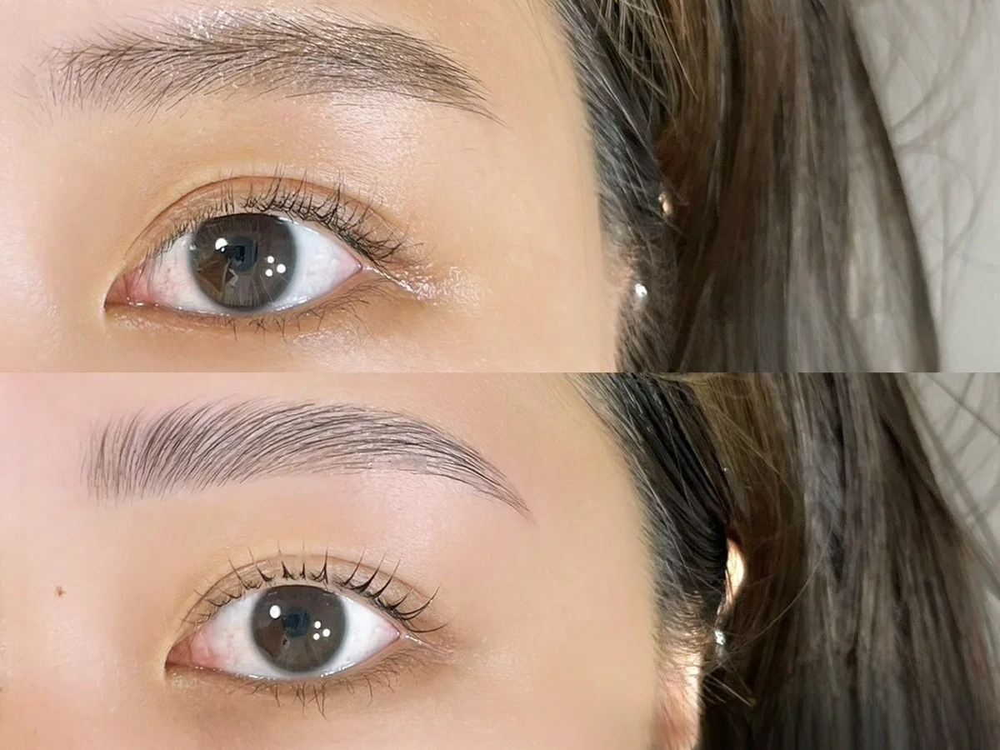
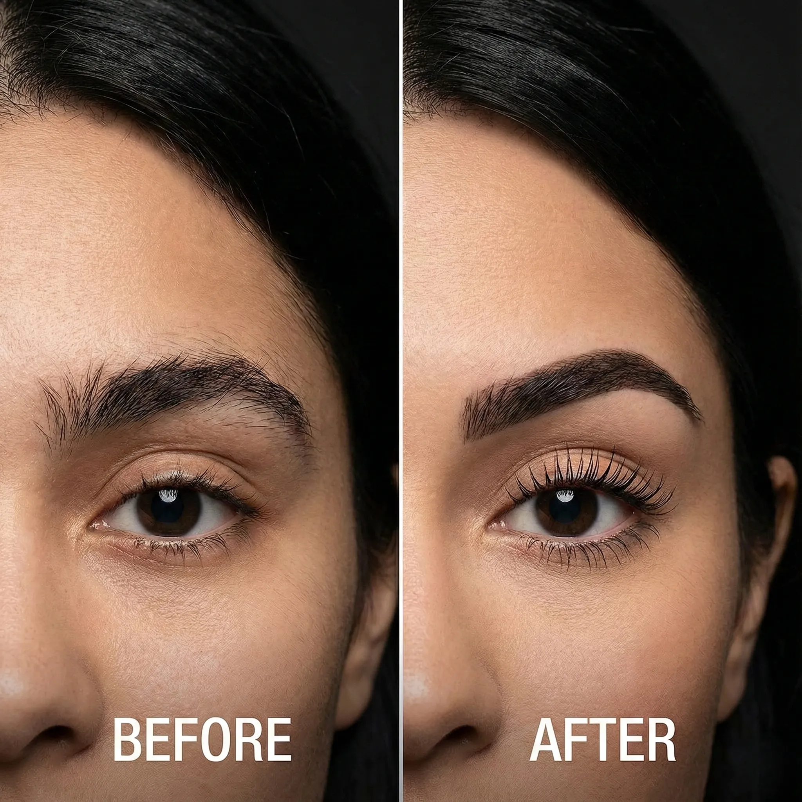
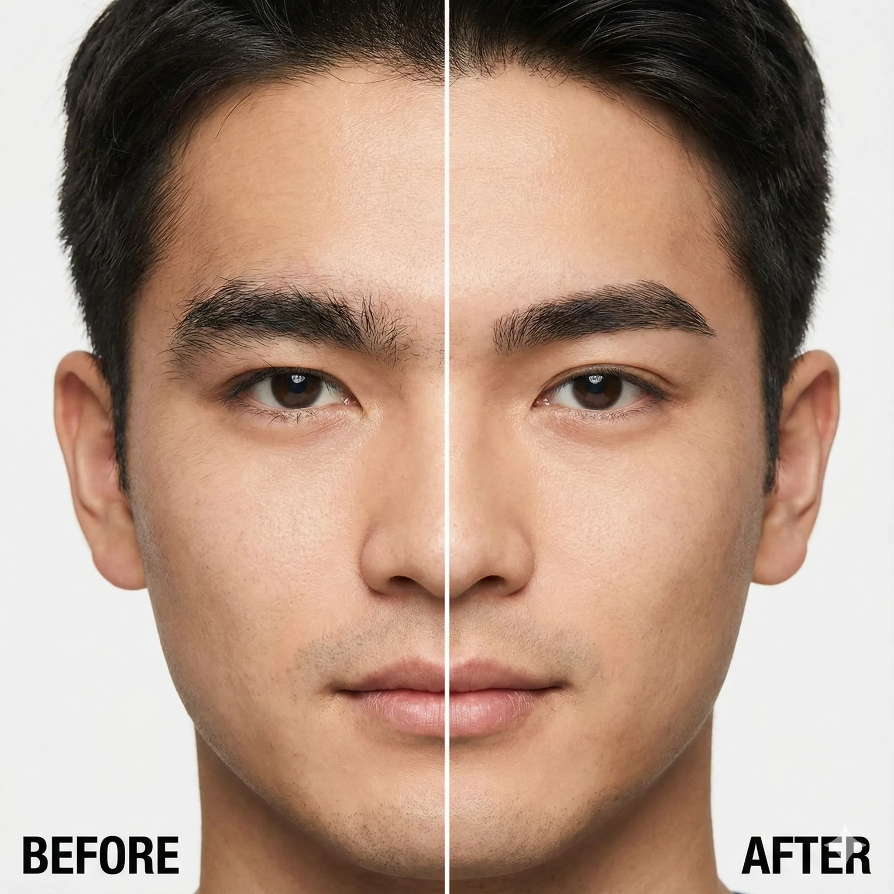
はい、同時施術が可能です。むしろ当店では眉毛とまつ毛の同時施術をおすすめしております。目元全体のバランスが整い、セット価格でお得にご利用いただけます。施術時間は約90分が目安です。
当店では国産の低刺激WAXを使用しており、痛みを最小限に抑えています。毛抜きで抜くよりも一瞬で終わるため、むしろラクだったとおっしゃる方がほとんどです。敏感肌の方もご安心ください。
理想は2週間以上、最低でも1週間は自己処理をせずにお越しください。ある程度毛が伸びている状態の方が、理想の眉ラインを作りやすく、WAXの効果も長持ちします。
はい、もちろん大丈夫です。当店のお客様の多くが初めての方です。カウンセリングでまつ毛の状態を丁寧に診断し、お一人おひとりに最適な施術をご提案します。不安な点は何でもお気軽にご相談ください。
個人差はありますが、まつ毛パーマは約37日間、眉毛WAXは約2〜3週間持続される方が多いです。当店では国産の高品質薬剤を使用しているため、一般的なサロンよりも長持ちしやすいのが特徴です。
まつ毛の成長周期（約40日）に合わせて、40日前後の来店をおすすめしています。このサイクルで通うことで、まつ毛のコンディションを常に良い状態に保ち、セラムとの相乗効果でまつ育の効果も最大化できます。
施術のみでも十分美しい仕上がりになりますが、セラムを併用することで自まつ毛が太く・長く育ち、回を重ねるごとに仕上がりが良くなっていきます。特に初回からの使用がおすすめです。「通うほどに美しくなる」を実感していただくために、ぜひお試しください。
まつ毛パーマは約60分、眉毛メニューは約30分、セットメニューは約90分が目安です。初回はカウンセリングのお時間をいただくため、プラス15〜20分ほどお見込みください。
まつげエクステがついた状態ではまつ毛パーマの施術はできません。当店でマツエクオフ（¥1,100）も承っておりますので、同日に施術が可能です。※LEDエクステには対応しておりません。
KATE stage LASH 蒲田西口店
〒144-0051
東京都大田区西蒲田7丁目48-10
三晃電気ビル501号
JR京浜東北線・東急池上線・東急多摩川線
蒲田駅西口から徒歩2分
9:00 - 20:00（最終受付 19:00）
不定休
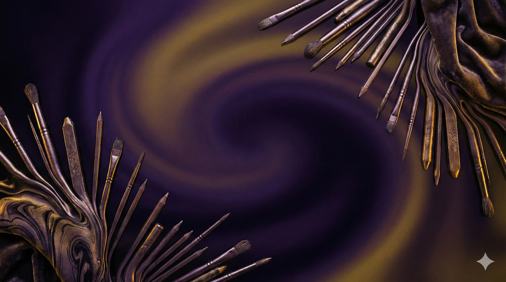
初回から40日ごとの来店で、
3回目には「これ、自分のまつ毛？」という驚きを。
朝のメイクが15分短くなる自由を。
そして、すっぴんでも揺るがない自信を。
まずは無料カウンセリングで、あなたのまつ毛の可能性をお見せします。
無料カウンセリングを予約するカウンセリング無料・当日予約OK・蒲田駅西口から徒歩2分